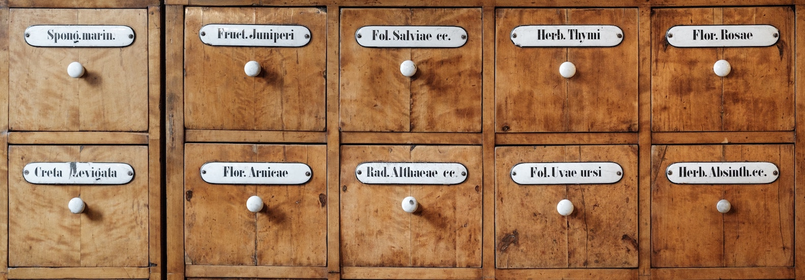

Conduct Foundational Work
We are building our foundational social and technical infrastructure to enhance our research community's ability to tackle large problems.
Project overview
Wikimedia projects are created and maintained by a vast network of individual contributors and organizations with different roles and expertise. The Wikimedia Foundation, including Wikimedia Research, plays an important role in supporting these efforts, but our internal capacity and expertise will always be more limited than those of the Movement as a whole. Tackling the strategic challenges ahead requires an investment in foundational social and technical infrastructure that individuals, groups, and organizations across the Movement can use.
We see an urgent need for increasing the development and dissemination of foundational resources to grow research capacities across the Movement. These foundational resources take many forms: new tools for developing scientific knowledge about projects and contributors; new open data resources and improved tools for working with them; new methods and guidance for mission-aligned research and technology development; and outreach activities designed to foster a healthy, diverse, and dynamic community of researchers to be part of the Wikimedia Movement.
More information can be found in our white paper.
Recent updates
-
Multilingual Wikipedia Research
Our paper discussing good research practices for working with multilingual and multimodal Wikipedia data was accepted as part of Wiki-M3L workshop at ICLR 2022. -
TREC 2021 Results Published
The final report for the TREC 2021 Fair Ranking track (fair recommendations for WikiProjects) has been released. -
Edit Types Library
We have released a new Python library for detecting what actions (such as adding links or removing references) were taken in a given Wikipedia edit. Try it out! -
Wiki-M3L Call for Papers
You have until 25 February 2022 to submit papers to Wiki-M3L in the area of multimodal and/or multilingual research trained or tested on Wikipedia data. -
TREC 2022
The Fair Ranking track at TREC will return this year, again with a focus on fair recommendations of articles for WikiProjects, but likely with expanded fairness criteria and slightly new tasks. -
Wiki Workshop 2022
The 9th annual Wiki Workshop is scheduled for April 25, 2022 as part of The Web Conference 2022. You are invited to participate. -
Wikimedia Research & Technology Fund
We started a research fund to provide support to individuals, groups, and organizations with research interests on or about Wikimedia projects. -
Search Design and Wikipedia
We released a blogpost with support from DuckDuckGo describing how readers get to Wikipedia and the particular role that information modules on Search play in this process. -
Analyzing the Wikipedia Clickstream
We released a blogpost describing WikiNav, a tool for exploring clickstream data about how readers get to and from Wikipedia articles. -
Mental Health Information on Wikipedia
We released a blogpost discussing how Wikipedia readers navigate content related to mental health.
Content Warning: this blog post contains discussion of suicide. -
Searching for Wikipedia
We released a blogpost and new dataset of which search engines readers use to access Wikipedia. The data is updated daily and can be split by country, language, OS, and browser. -
Fair Ranking Competition Data
We released a dataset of almost 60 WikiProjects, associated articles, and relevant continents to these articles to spur research on fair list-building for WikiProjects. -
COVID-19 Dataset Release
We release a dataset of COVID-19-related readership data from the first six months of 2020 to help researchers understand geographic and temporal trends of information seeking around COVID-19. -
Wiki Workshop 2021
The 8th annual Wiki Workshop is scheduled for April 14, 2021 as part of the Web Conference 2021. You are invited to participate. -
Value of Wikipedia
We published a paper describing how Wikipedia readers follow links to external sites, serving as a gateway to the broader Web ecosystem. -
Language-agnostic Topic Classification
We published a paper describing our model for predicting article topics for every language of Wikipedia and principles for language-agnostic modeling. -
Fair Ranking Competition
We are helping to organize a fair recommendation competition at the Text REtrieval Conference (TREC) around building worklists for WikiProjects. -
Wikidata Transclusion in English Wikipedia
We published a paper describing how English Wikipedia uses Wikidata as part of efforts to better understand the interconnected nature of the wikis. -
Saying Thanks on Wikipedia
We published a blogpost describing how the thanks feature is used on Wikipedia and what effect it has on editor activity. -
Ethical AI Blogpost
We published a blogpost detailing what a minimum viable process for ethical AI product development would look like at Wikimedia. -
Ethical AI White Paper
We released a white paper that lays out some possible risk scenarios and process proposals for ethical and human-centered AI at Wikimedia.